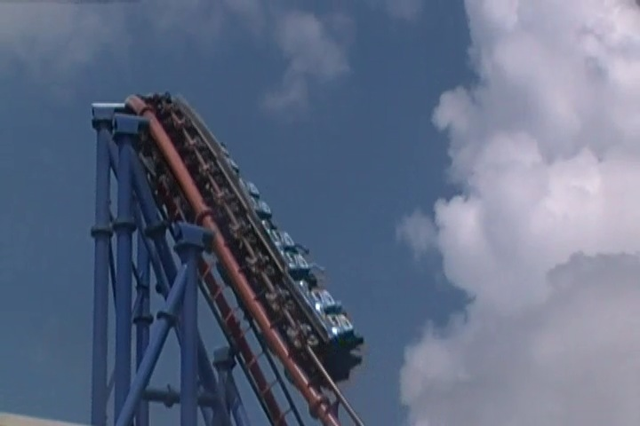
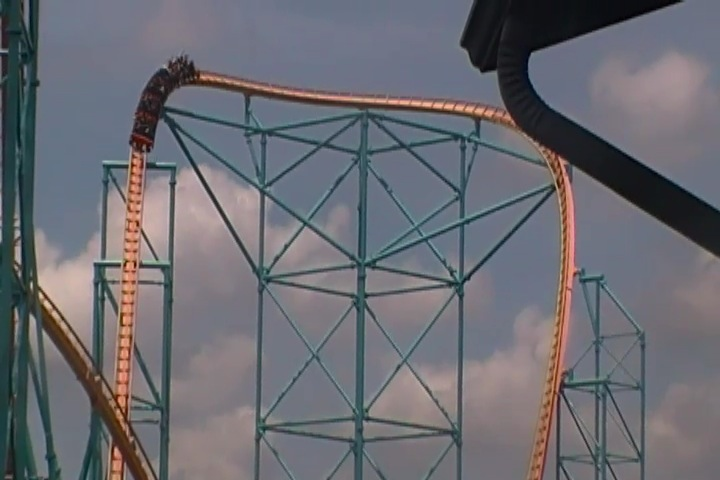
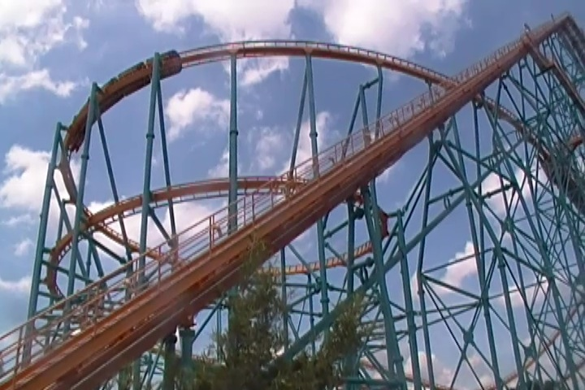
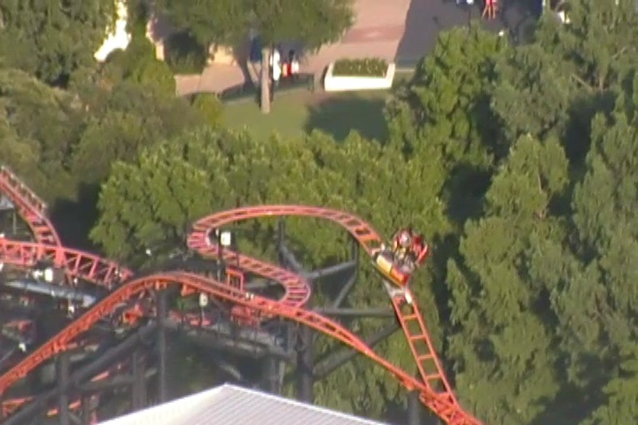
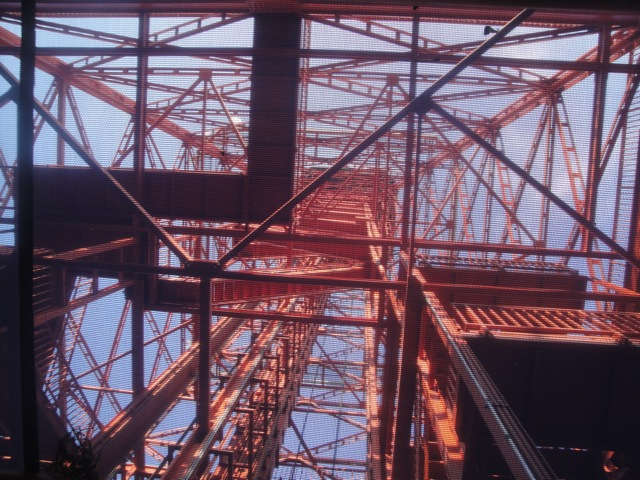
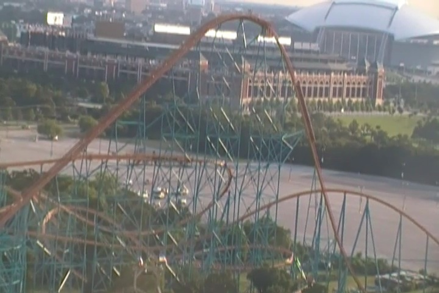
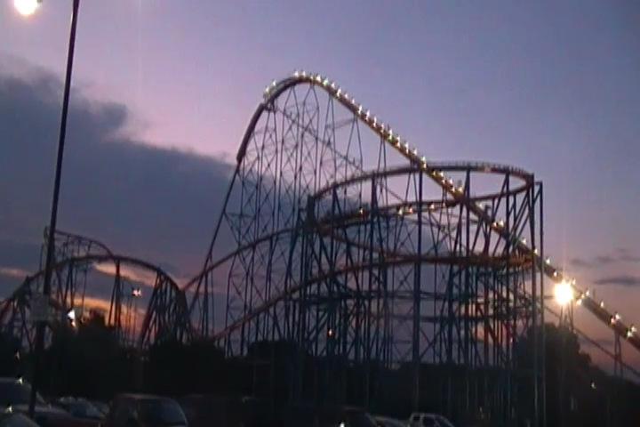
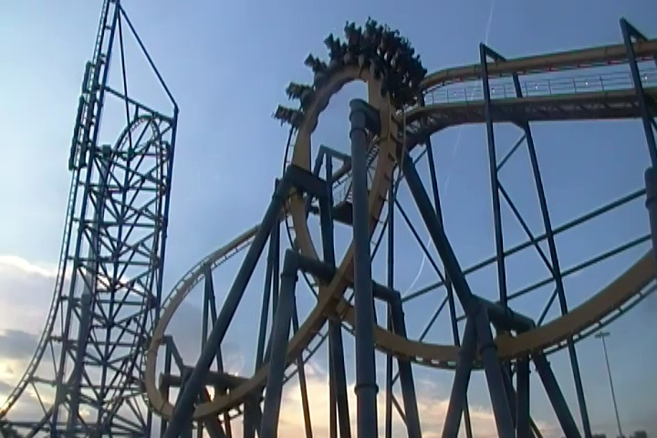
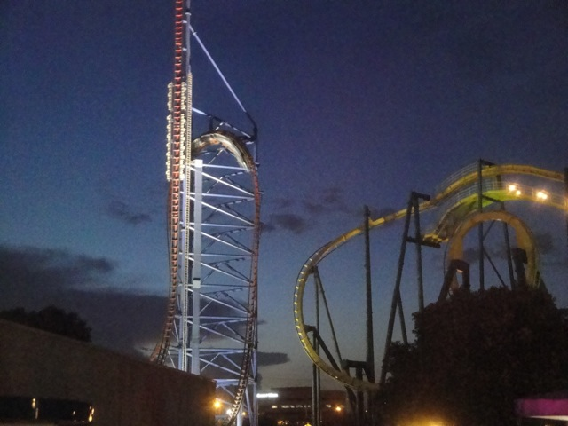

All right. Time to move onto the next park. Today, we're at Six Flags Over Texas for some more roller coaster fun. We had a good time at Six Flags Fiesta Texas, and I'm hoping today will be similar. Hey, at least we get to get on another Rocky Mtn Coaster today.
First ride of the day, Mr. Freeze.
Hey, its a great ride at Six Flags St. Louis and I'm excited to try it out backwards.

Gotta admit. Mr. Freeze backwards is really damn good and a definete improvement. Two big thumbs up. =)

You know, we've got this engenius idea of just running back and forth across the park with a confusing layout riding rides that are nowhere near each other, like going to Titan after Mr. Freeze. Hey, at least we're making Ceaser do some walking.

Gotta admit. This bonus helix that Titan has really does make a difference. Its powerful, a lot of fun, and rivals the big black out helix in intensity.
But yeah. Aside from that, its pretty much just Goliath.
Turns out that this was the first Mine Train ever built. So yay!!! We're riding a historical coaster. Its...interesting.
Hey. Its on the Fastpass, and it'll only take a second. Why not?
Not only was it one of my favorite S&S Towers ever, but the operator just decided to give us double rides for no reason. Thanks lady, you're awesome.
Moving back and forth across the park, we hit up La Vibora next.
These Intamin Bobsleds are fun rides and all, though I do feel that the crew needs to improve their friendliness (and operations as well).

Oh joy. Yet another Pandemonium clone for us to ride.
Hey, at least there was a single riders line for us to use so we can get on and off it quickly.
You knew damn well that we were gonna stop at a Cracker Barrel at some point on the trip. =)
All right!!! Time for the main reason we came to Six Flags Over Texas on this trip!!! =)
Ah Dammit!!! The ride is closed!!! What? Is it having technical difficulties right now? Nope, turns out that the ride is closed because of a lightning storm. Thats fine and all except for one small itsy bitsy little problem. THE LIGHTNING IS 30 FREAKING MILES AWAY!!!! 30 MILES!!!!!There is no considerable danger from lightning 30 MILES AWAY!!!! That's like the equivelant of Six Flags Magic Mountain closing because there's bad weather in Ventura even though Ventura can be a cloudy and gloomy 60 degrees while SFMM is baking in 100 degree weather with no shade whatsoever. Clearly, you can see that the weather is so inter-connected that weather 30 miles away. Just look at the blue skies. Clearly you can see that the area is rampant with lightning, just waiting to strike poor innocent riders dead. We took our Couchsurfing Host to the park and got him in for free as a sort of gift and payback for him and this was the treatment that he ended up getting. After waiting 90 minutes in a line that refused to move for weather reasons during a bright sunny day, our host basically said (paraphrasing here) "F*ck this!! I'm gonna go home and walk my dog!!" and left. I'm just glad that this misreble experience was at least free for him, so he only ended up wasting time, and not any money. But hey, maybe Six Flags Over Texas is just super-protective of saftey. I mean, they take everything incredibly seriously here. Nobody would ever die at Six Flags Over Texas. Oh wait a minute!!!
Finally, after 2 hours of waiting for nothing (30 minutes after our host left), we got to ride New Texas Giant. Thanks a lot for the wait.
Ok, if there's one thing I want to praise Six Flags Over Texas for (And trust me, there's almost nothing I want to praise this park for), it'd be these zipper pockets for your stuff. They're everywhere at the Disney parks and among all the discussion about loose articles, lockers, and leaving your stuff to the side, I've always wanted to scream "WHY DON'T THEY JUST USE THOSE ZIPPERED POCKETS THAT DISNEY USES!!!?" Well, Six Flags Over Texas is the first Non-Disney park I've seen that uses them. So I gotta give them props on that (I'm betting that this was totally a Jay Thomas idea. I'm 100% certain that it was).
And of course, just like with Iron Rattler, New Texas Giant was a great ride.
It's not quite El Toro, but there is still plenty of ejector air to be found on New Texas Giant.
Freaky to think that almost exactly 24 hours after we rode, the woman fell out of Texas Giant.
Apparently she fell out during some of the laterals. I get that she was too fat and the restraint didn't secure her in, but if it was during laterals, how did those sheilds on the side not prevent her from coming out?
Bummer for all my friends who were gonna be going to Six Flags Over Texas later this year and are now missing out on New Texas Giant.
If you wanna ride New Texas Giant, well you can't at the moment. But you can check out this raw footage video we shot of the ride (Close enough).
Ooh. Pretty shot of Six Flags Over Texas.
Clearly you can see by this sign that Texas has one of the finest education systems not only in the U.S, but in the entire world. But then again, you would only expect such a great education system when your governer is such a genius, that he actually discovered that New Orleans is actually in Florida. Silly me for thinking it was in Louisiana for my entire life. How could I have been so stupid?
Time for some more ariel shots of Six Flags Over Texas.

Up the skirt shot of Oil Derrick.
Mr. Freeze from Oil Derrick.
We'll get to you sooner or later Texas Sky Screamer.
"Sh*t!!! I'm being held up at Lex Luthor heights by these playground chains!!!"
*Sigh* "God Dammit Six Flags Over Texas. Why did you have to close Shockwave right now!?"
Look, I know that Shockwave needs typical maintenence done and its much harder to do that since Schwarzkoph is no longer around and you have to do it all by scratch, so it'll take longer. I get that and understand that. But why are you doing this in the summer with the goal of having it ready to open in December when the park is closed? Shouldn't you have done it the other way around to please your summer crowds?

Hey SFMM Fanboys & Co-workers!!! Does this ride look familiar to you!!? =)
"Hey Goliath!!! Suck it!!! I've got TWO helixes of death!!!"
New Texas Giant shining in all of its glory.
I've been asked about the SFOT accident so much by nearly every friend, family member, and co-worker that I've thought about just handing everyone I know a buisness card that states the following.
Yes, I was at Six Flags Over Texas and rode the New Texas Giant.
I was there the day before the accident.
While roller coaster accidents are rare, this (fat person not fitting and getting ejected) seems to be a recurring theme in the few roller coaster accidents.
I am safe and will continue to ride roller coasters with no fear of this happening to me.
Hey, aside from New Texas Giant (which isn't on Gold Fastpass), this is one of the best rides in the park.
"Oh Superman!!! Save us from the bad operations and stupidity of this park!!!"
Mmm. More Mr. Freeze Goodness.
Time for the parks wooden coaster. Judge Roy Scream.
I was worried that Judge Roy Scream was gonna be a cruiser snoozer, but nope. It was a really good ride with some nice pops of airtime.
That, and it does look really pretty in the moonlight.
More Texas Giant Ejector Air Goodness!!!

Gotta admit. Titan does look nice at night.
"Meh, we're not that concerned about double checking the saftey restraints on overweight guests. Our real priority is spent on stopping credit whores from emberrasing themselves because that makes our park much safer."
"HELL NO!!! YOU GUYS ARE NOT DRAGGING ME ON THE PHOINEX CLONE!!! HELL NO!!!!"

Besides, there's one last credit (that isn't closed or restricted) for us to get here.
It was a fine Batman clone and all, but the operations for this ride were F*CKING AWFUL!!!!! I know that the rest of the park had bad operations, but it was really REALLY BAD HERE!!! And we had the Gold Fastpass!!! I can't imagine how painful it must have been to be in the stand by line. I was so tempted to pull out the remaining bits of Canadian Money still in my wallet (Yes, I still have some left. It's not like I'm gonna be able to spend it on anything over here) and just screaming "AM I AT LA RONDE!!!?" The reactions would've been hilarious, but I was seriously thinking that to myself.
And in other news, I reached another milestone today as Batman the Ride ended up being my 400th credit. Yay Me!! =)

We were gonna put our Fastpass to good use and get another ride in on Mr. Freeze, but it went 10/7 right before we could get on. Of course.
Well hey. At least now we can get in line for the Texas Sky Screamer.
Yeah, our Gold Fastpass didn't work for Texas Sky Screamer either (Thank you Six Flags), so we had to wait in the regular line for it. And I gotta admit. The line for this may have very well been the worst line I ever waited in. Not only was it incredibly long and full of obnoxious people who wouldn't shut the f*ck up, but it had some of the worst operations EVER!!!! We were in line for 30 minutes, and during that time, the ride only cycled 3 TIMES!!!! 3 F*CKING TIMES!!!!! THAT HAS GOT TO BE THE WORST OPERATIONS I'D EVER SEEN IN MY ENTIRE LIFE!!!!!!! Realizing that riding this ride would mean staying in this hot, humid, and non-moving line with obnoxious people till about 1:00 AM when we'd FINALLY get to ride. We decided to just bail and leave so we could hang out with our host a little more and get a head start on our suicide night drive to Branson, MO. And that was our visit to Six Flags Over Texas, and I did not enjoy this park. I REALLY did not enjoy this park. The operations were just too horrible and the stupidity was too high. And after I heard the stories of my friends who visited the park a couple weeks later, it seemed EVEN WORSE!!!! Even with all the bad stuff on this day, we got lucky with all that we could do at the park (which we were only able to do by getting the Gold Fastpass, and we still missed out on stuff). Yes, I still need to come back for Shockwave and I'd like some more rides on New Texas Giant as that ride is awesome. But honestly, as a park itself, I wanna go back to Six Flags Over Texas about as much as I wanna go back to Mt. Olympus (and even that seems to be slowly improving. The key word being slowly). So yeah. This park really dissapointed me, which really bums me as I heard that the park was fantastic a couple years ago back when Jay Thomas was running it, or even back in 2009 before Jay Thomas, it still seemed like a good park, which makes it all the more depressing to see what I saw today. I know that I have to go back for Shockwave and re-rides on New Texas Giant, but todays visit makes me want to put off that re-visit for as long as I can. Keeping my fingers crossed that it'll go back to its glory days next time I visit.